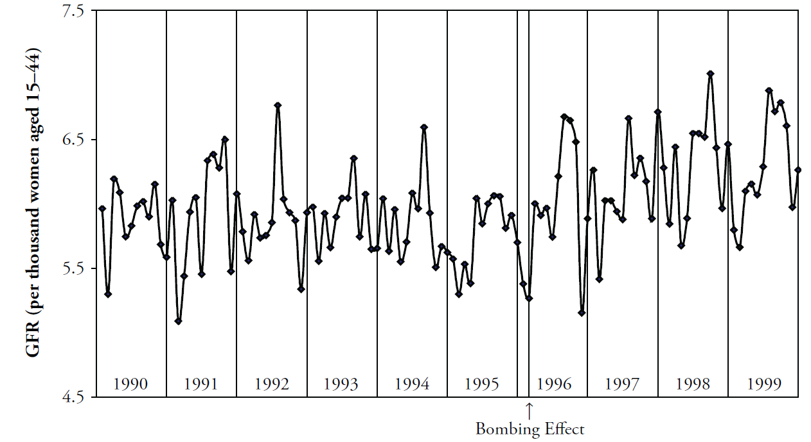
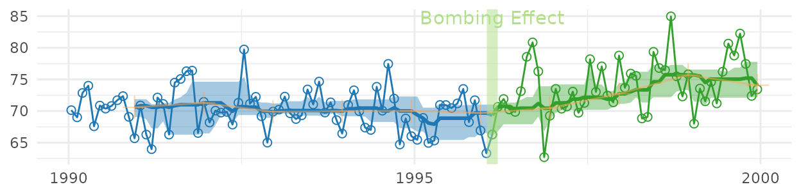
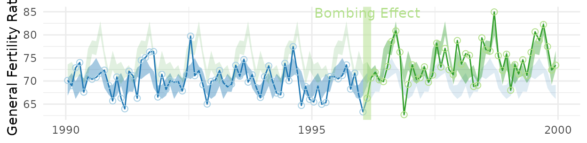
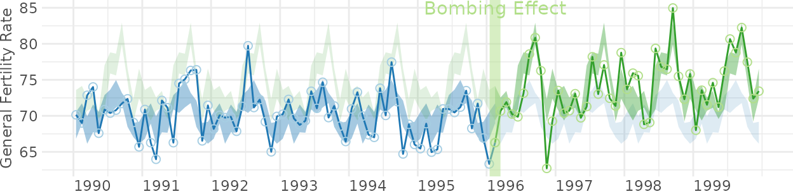
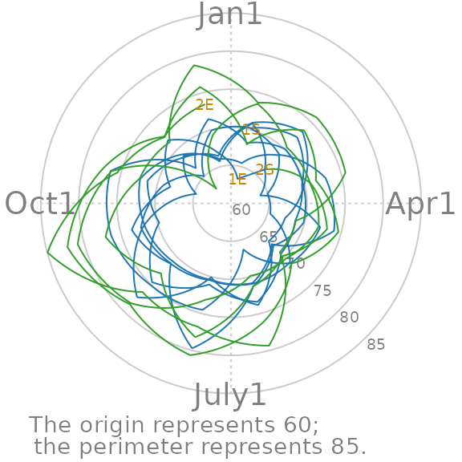
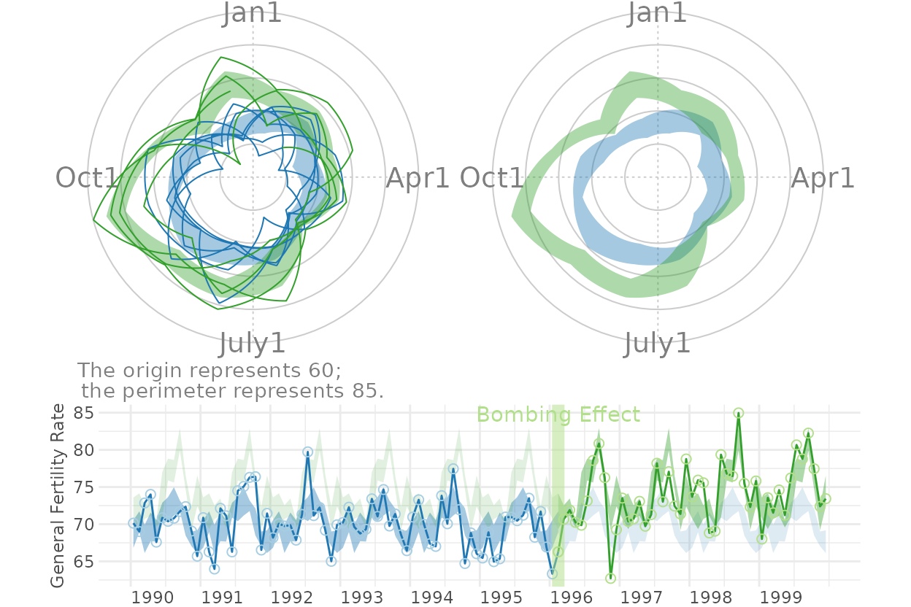
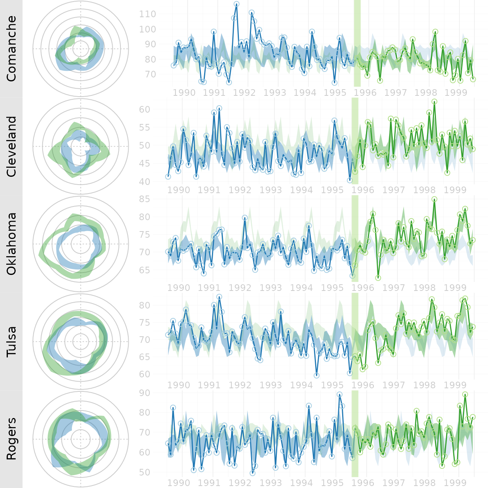
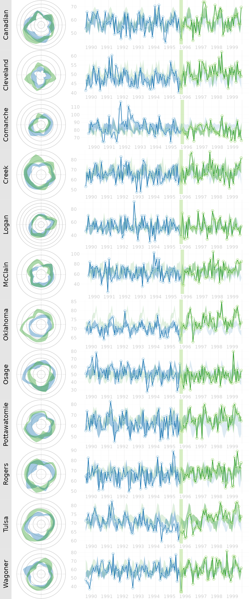
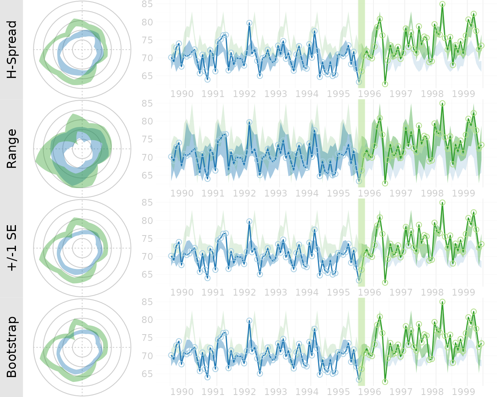

Figures for the MBR Manuscript
This vignette produces the graphs included in the initial MBR manuscript.
Figure 1: Cartesian Rolling - 2005 Version
Figure 1: Raw monthly birth rates (General Fertility Rates; GFR’s) for Oklahoma County, 1990-1999, plotted in a linear plot; the “bombing effect” is located ten months after the Oklahoma City bombing.

Figure 2: Cartesian Rolling - 2014 Version
Smoothed monthly birth rates (General Fertility Rates; GFRs) for Oklahoma County, 1990-1999, plotted in a linear plot. The top plot shows the connected raw data with a February smoother; the middle plot shows smoothing with a 12-month moving average, blue/green line, superimposed on a February smoother, red line); the bottom plot shows the smoothers and confidence bands, which are H-spreads defined using the distribution of GFR’s for the given month and 11 previous months.
First, some R packages are loaded, and some variables and functions are defined.
changeMonth <- base::as.Date("1996-02-15") #as.Date("1995-04-19") + lubridate::weeks(39) = "1996-01-17"
vpLayout <- function(x, y) { grid::viewport(layout.pos.row=x, layout.pos.col=y) }
fullSpread <- function( scores ) {
return( base::range(scores) ) #A new function isn't necessary. It's defined in order to be consistent.
}
hSpread <- function( scores ) {
return( stats::quantile(x=scores, probs=c(.25, .75)) )
}
seSpread <- function( scores ) {
return( base::mean(scores) + base::c(-1, 1) * stats::sd(scores) / base::sqrt(base::sum(!base::is.na(scores))) )
}
bootSpread <- function( scores, conf=.68 ) {
plugin <- function( d, i ) { base::mean(d[i]) }
distribution <- boot::boot(data=scores, plugin, R=99) #999 for the publication
ci <- boot::boot.ci(distribution, type = c("bca"), conf=conf)
return( ci$bca[4:5] ) #The fourth & fifth elements correspond to the lower & upper bound.
}
darkTheme <- ggplot2::theme(
axis.title = ggplot2::element_text(color="gray30", size=9),
# axis.text.x = ggplot2::element_text(color="gray30", margin = grid::unit(.00001, "cm"), hjust=0),
# axis.text.y = ggplot2::element_text(color="gray30", margin = grid::unit(.00001, "cm")),
axis.text.x = ggplot2::element_text(color="gray30", hjust=0),
axis.text.y = ggplot2::element_text(color="gray30"),
axis.ticks.length = grid::unit(0, "cm"),
# panel.grid.minor.y = element_line(color="gray95", size=.1),
# panel.grid.major = element_line(color="gray90", size=.1),
panel.spacing = grid::unit(c(0, 0, 0, 0), "cm"),
plot.margin = grid::unit(c(0, 0, 0, 0), "cm")
)
# qplot(mtcars$hp) + darkTheme
lightTheme <- darkTheme + ggplot2::theme(
axis.title = ggplot2::element_text(color="gray80", size=9),
axis.text.x = ggplot2::element_text(color="gray80", hjust=0),
axis.text.y = ggplot2::element_text(color="gray80"),
panel.grid.minor.y = ggplot2::element_line(color="gray99", size=.1),
panel.grid.major = ggplot2::element_line(color="gray95", size=.1)
)Warning:
[1m
[22mThe `size` argument of `element_line()` is deprecated as of ggplot2 3.4.0.
[36mℹ
[39m Please use the `linewidth` argument instead.
dateSequence <- base::seq.Date(from=base::as.Date("1990-01-01"), to=base::as.Date("1999-01-01"), by="years")
xScale <- ggplot2::scale_x_date(breaks=dateSequence, labels=scales::date_format("%Y"))
xScaleBlank <- ggplot2::scale_x_date(breaks=dateSequence, labels=NULL) #This keeps things proportional down the three frames.Individual Components
Here is the basic linear rolling graph. It doesn’t require much specification, and will work with a wide range of appropriate datasets. This first (unpublished) graph displays all components.
# dsLinearAll <- utils::read.csv("./Datasets/CountyMonthBirthRate2005Version.csv", stringsAsFactors=FALSE)
# dsLinearAll$Date <- base::as.Date(dsLinearAll$Date)
# dsLinearOkc <- dsLinearAll[dsLinearAll$CountyName=="oklahoma", ]
# Uncomment the next two lines to use the version built into the package. By default, it uses the
# CSV to promote reproducible research, since the CSV format is more open and accessible to more software.
dsLinearAll <- CountyMonthBirthRate2005Version
dsLinearOkc <- dsLinearAll[dsLinearAll$CountyName=="oklahoma", ]
dsLinearOkc <- Wats::AugmentYearDataWithMonthResolution(dsLinear=dsLinearOkc, dateName="Date")
portfolioCartesian <- Wats::AnnotateData(dsLinearOkc, dvName="BirthRate", centerFunction=stats::median, spreadFunction=hSpread)
Wats::CartesianRolling(
dsLinear = portfolioCartesian$dsLinear,
xName = "Date",
yName = "BirthRate",
stageIDName = "StageID",
changePoints = changeMonth,
changePointLabels = "Bombing Effect"
)
The version for the manuscript was tweaked to take advantage of certain features of the dataset. This is what it looks like when all three stylized panels are combined.
topPanel <- Wats::CartesianRolling(
dsLinear = portfolioCartesian$dsLinear,
xName = "Date",
yName = "BirthRate",
stageIDName = "StageID",
changePoints = changeMonth,
yTitle = "General Fertility Rate",
changePointLabels = "Bombing Effect",
drawRollingBand = FALSE,
drawRollingLine = FALSE
)
middlePanel <- Wats::CartesianRolling(
dsLinear = portfolioCartesian$dsLinear,
xName = "Date",
yName = "BirthRate",
stageIDName = "StageID",
changePoints = changeMonth,
yTitle = "General Fertility Rate",
changePointLabels = "",
drawRollingBand = FALSE,
drawJaggedLine = FALSE
)
bottomPanel <- Wats::CartesianRolling(
dsLinear = portfolioCartesian$dsLinear,
xName = "Date",
yName = "BirthRate",
stageIDName = "StageID",
changePoints = changeMonth,
yTitle = "General Fertility Rate",
changePointLabels = "",
# drawRollingBand = FALSE,
drawJaggedLine = FALSE
)
topPanel <- topPanel + xScale + darkTheme
middlePanel <- middlePanel + xScale + darkTheme
bottomPanel <- bottomPanel + xScaleBlank + darkTheme
grid::grid.newpage()
grid::pushViewport(grid::viewport(layout=grid::grid.layout(3,1)))
print(topPanel, vp=vpLayout(1, 1))
print(middlePanel, vp=vpLayout(2, 1))
print(bottomPanel, vp=vpLayout(3, 1))
grid::popViewport()
Figure 4: Carteisan Periodic
Carteisan plot of the GFR time series data in Oklahoma County, with H-spread Bands superimposed.
cartesianPeriodic <- Wats::CartesianPeriodic(
portfolioCartesian$dsLinear,
portfolioCartesian$dsPeriodic,
xName = "Date",
yName = "BirthRate",
stageIDName = "StageID",
changePoints = changeMonth,
changePointLabels = "Bombing Effect",
yTitle = "General Fertility Rate",
drawPeriodicBand = TRUE #The only difference from the simple linear graph above
)
print(cartesianPeriodic)
cartesianPeriodic <- cartesianPeriodic + xScale + darkTheme
print(cartesianPeriodic)
Figure 5: Polar Periodic
Wrap Around Time Series (WATS Plot) of the Oklahoma City GFR data, 1990-1999
portfolioPolar <- Wats::PolarizeCartesian(
dsLinear = portfolioCartesian$dsLinear,
dsStageCycle = portfolioCartesian$dsStageCycle,
yName = "BirthRate",
stageIDName = "StageID",
plottedPointCountPerCycle = 7200
)
grid::grid.newpage()
Wats::PolarPeriodic(
dsLinear = portfolioPolar$dsObservedPolar,
dsStageCycle = portfolioPolar$dsStageCyclePolar,
yName = "Radius",
stageIDName = "StageID",
drawPeriodicBand = FALSE,
drawStageLabels = TRUE,
drawRadiusLabels = TRUE,
cardinalLabels = c("Jan1", "Apr1", "July1", "Oct1")
) ## Figure 6: WATS and Cartesian Wrap Around Time Series (WATS Plot) of the Oklahoma City GFR data, 1990-1999
portfolioPolar <- Wats::PolarizeCartesian(
dsLinear = portfolioCartesian$dsLinear,
dsStageCycle = portfolioCartesian$dsStageCycle,
yName = "BirthRate",
stageIDName = "StageID",
plottedPointCountPerCycle = 7200
)
grid::grid.newpage()
grid::pushViewport(grid::viewport(
layout=grid::grid.layout(
nrow = 2, ncol = 2, respect = TRUE,
widths = unit(c(1, 1), c("null", "null")),
heights = unit(c(1, .5), c("null", "null"))
),
gp = grid::gpar(cex=1, fill=NA)
))
## Create top left panel
grid::pushViewport(grid::viewport(layout.pos.col=1, layout.pos.row=1))
topLeftPanel <- Wats::PolarPeriodic(
dsLinear = portfolioPolar$dsObservedPolar,
dsStageCyclePolar = portfolioPolar$dsStageCyclePolar,
yName = "Radius",
stageIDName = "StageID", #graphCeiling=7,
cardinalLabels = c("Jan1", "Apr1", "July1", "Oct1")
)
grid::upViewport()
## Create top right panel
grid::pushViewport(grid::viewport(layout.pos.col=2, layout.pos.row=1))
topRighttPanel <- Wats::PolarPeriodic(
dsLinear = portfolioPolar$dsObservedPolar,
dsStageCyclePolar = portfolioPolar$dsStageCyclePolar,
yName = "Radius",
stageIDName = "StageID", #graphCeiling=7,
drawObservedLine = FALSE,
cardinalLabels = c("Jan1", "Apr1", "July1", "Oct1"),
originLabel = NULL
)
grid::upViewport()
## Create bottom panel
grid::pushViewport(grid::viewport(layout.pos.col=1:2, layout.pos.row=2, gp=grid::gpar(cex=1)))
print(cartesianPeriodic, vp=vpLayout(x=1:2, y=2)) #Print across both columns of the bottom row.
grid::upViewport()
Figure 7: County Comparison
This figure compares Oklahoma County against the (other) largest urban counties.
# dsLinearAll <- Wats::AugmentYearDataWithMonthResolution(dsLinear=CountyMonthBirthRate2005Version, dateName="Date")
#Identify the average size of the fecund population
plyr::ddply(dsLinearAll, "CountyName", plyr::summarize, Mean=base::mean(FecundPopulation)) CountyName Mean
1 canadian 18332.596
2 cleveland 48865.271
3 comanche 26268.104
4 creek 13402.358
5 logan 7065.562
6 mcclain 5434.525
7 oklahoma 146882.529
8 osage 8529.625
9 pottawatomie 13604.321
10 rogers 13383.292
11 tulsa 123783.479
12 wagoner 11579.967
GraphRowComparison <- function( rowLabel="", countyName="oklahoma", spreadFunction=hSpread, changeMonth=as.Date("1996-02-15") ) {
dsLinear <- dsLinearAll[dsLinearAll$CountyName==countyName, ]
dsLinear <- Wats::AugmentYearDataWithMonthResolution(dsLinear=dsLinear, dateName="Date")
portfolioCartesian <- Wats::AnnotateData(dsLinear, dvName="BirthRate", centerFunction=stats::median, spreadFunction=spreadFunction)
portfolioPolar <- Wats::PolarizeCartesian(dsLinear=portfolioCartesian$dsLinear, dsStageCycle=portfolioCartesian$dsStageCycle, yName="BirthRate", stageIDName="StageID", plottedPointCountPerCycle=7200)
cartesianPeriodic <- Wats::CartesianPeriodic(portfolioCartesian$dsLinear, portfolioCartesian$dsPeriodic, xName="Date", yName="BirthRate", stageIDName="StageID", changePoints=changeMonth, changePointLabels="" )
grid::pushViewport(grid::viewport(
layout=grid::grid.layout(nrow=1, ncol=3, respect=F, widths=grid::unit(c(1.5,1,3), c("line", "null", "null"))),
gp=grid::gpar(cex=1, fill=NA)
))
grid::pushViewport(grid::viewport(layout.pos.col=1))
grid.rect(gp=gpar(fill="gray90", col=NA))
grid.text(rowLabel, rot=90)
grid::popViewport()
grid::pushViewport(grid::viewport(layout.pos.col=2))
polarPeriodic <- Wats::PolarPeriodic(dsLinear=portfolioPolar$dsObservedPolar, dsStageCyclePolar=portfolioPolar$dsStageCyclePolar, drawObservedLine=FALSE, yName="Radius", stageIDName="StageID", originLabel=NULL, plotMargins=c(0,0,0,0))
grid::popViewport()
grid::pushViewport(grid::viewport(layout.pos.col=3))
print(cartesianPeriodic + xScale + lightTheme, vp=vpLayout(x=1, y=1))
grid::popViewport()
grid::popViewport() #Finish the row
}
counties <- c("comanche", "cleveland", "oklahoma", "tulsa", "rogers")
countyNames <- c("Comanche", "Cleveland", "Oklahoma", "Tulsa", "Rogers")
grid.newpage()
grid::pushViewport(grid::viewport(layout=grid.layout(nrow=length(counties), ncol=1), gp=grid::gpar(cex=1, fill=NA)))
for( i in base::seq_along(counties) ) {
grid::pushViewport(grid::viewport(layout.pos.row=i))
GraphRowComparison(countyName=counties[i], rowLabel=countyNames[i])
grid::popViewport()
}
grid::popViewport()
Here are all 12 counties that Ronnie colelcted birth records for. This extended graph is not in the mauscript.
counties <- base::sort(base::unique(dsLinearAll$CountyName))
countyNames <- c("Canadian", "Cleveland", "Comanche", "Creek", "Logan", "McClain", "Oklahoma", "Osage", "Pottawatomie", "Rogers", "Tulsa", "Wagoner")
grid::grid.newpage()
grid::pushViewport(grid::viewport(layout=grid.layout(nrow=base::length(counties), ncol=1), gp=grid::gpar(cex=1, fill=NA)))
for( i in base::seq_along(counties) ) {
grid::pushViewport(grid::viewport(layout.pos.row=i))
GraphRowComparison(countyName=counties[i], rowLabel=countyNames[i])
grid::popViewport()
}
grid::popViewport()
Figure 8: Error Band Comparison
This figure demonstrates that WATS accommodates many types of error bands.
spreads <- c("hSpread", "fullSpread", "seSpread", "bootSpread")
spreadNames <- c("H-Spread", "Range", "+/-1 SE", "Bootstrap")
grid::grid.newpage()
grid::pushViewport(grid::viewport(layout=grid::grid.layout(nrow=base::length(spreads), ncol=1), gp=grid::gpar(cex=1, fill=NA)))
for( i in base::seq_along(spreads) ) {
grid::pushViewport(grid::viewport(layout.pos.row=i))
GraphRowComparison(spreadFunction=base::get(spreads[i]), rowLabel=spreadNames[i])
grid::upViewport()
}
grid::upViewport()
Session Info
The current vignette was build on a system using the following software.
Report created by runner at Tue Feb 28 07:22:02 2023, +0000R version 4.2.2 (2022-10-31)
Platform: x86_64-pc-linux-gnu (64-bit)
Running under: Ubuntu 22.04.2 LTS
Matrix products: default
BLAS: /usr/lib/x86_64-linux-gnu/openblas-pthread/libblas.so.3
LAPACK: /usr/lib/x86_64-linux-gnu/openblas-pthread/libopenblasp-r0.3.20.so
locale:
[1] LC_CTYPE=C.UTF-8 LC_NUMERIC=C LC_TIME=C.UTF-8 LC_COLLATE=C.UTF-8 LC_MONETARY=C.UTF-8
[6] LC_MESSAGES=C.UTF-8 LC_PAPER=C.UTF-8 LC_NAME=C LC_ADDRESS=C LC_TELEPHONE=C
[11] LC_MEASUREMENT=C.UTF-8 LC_IDENTIFICATION=C
attached base packages:
[1] grid stats graphics grDevices utils datasets methods base
other attached packages:
[1] Wats_0.11.1.9000 boot_1.3-28 ggplot2_3.4.1 scales_1.2.1 plyr_1.8.8
loaded via a namespace (and not attached):
[1] Rcpp_1.0.10 highr_0.10 RColorBrewer_1.1-3 bslib_0.4.2 compiler_4.2.2 pillar_1.8.1
[7] jquerylib_0.1.4 tools_4.2.2 digest_0.6.31 lattice_0.20-45 timechange_0.2.0 lubridate_1.9.2
[13] jsonlite_1.8.4 evaluate_0.20 memoise_2.0.1 lifecycle_1.0.3 tibble_3.1.8 gtable_0.3.1
[19] pkgconfig_2.0.3 rlang_1.0.6 cli_3.6.0 yaml_2.3.7 pkgdown_2.0.7 xfun_0.37
[25] fastmap_1.1.1 withr_2.5.0 stringr_1.5.0 knitr_1.42 generics_0.1.3 desc_1.4.2
[31] fs_1.6.1 vctrs_0.5.2 sass_0.4.5 systemfonts_1.0.4 rprojroot_2.0.3 glue_1.6.2
[37] R6_2.5.1 textshaping_0.3.6 fansi_1.0.4 rmarkdown_2.20 farver_2.1.1 purrr_1.0.1
[43] magrittr_2.0.3 htmltools_0.5.4 testit_0.13 colorspace_2.1-0 labeling_0.4.2 ragg_1.2.5
[49] utf8_1.2.3 stringi_1.7.12 munsell_0.5.0 cachem_1.0.7 zoo_1.8-11